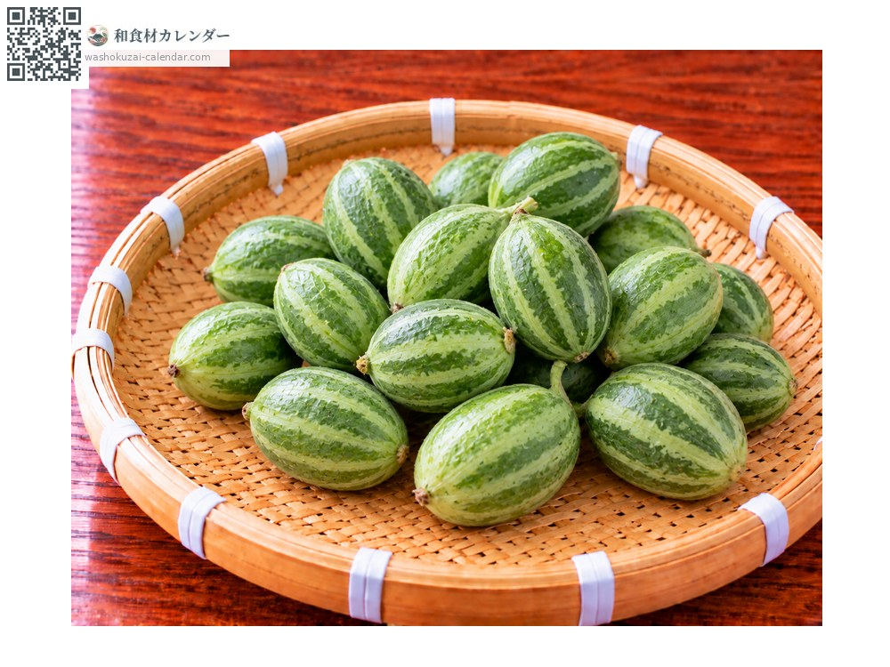
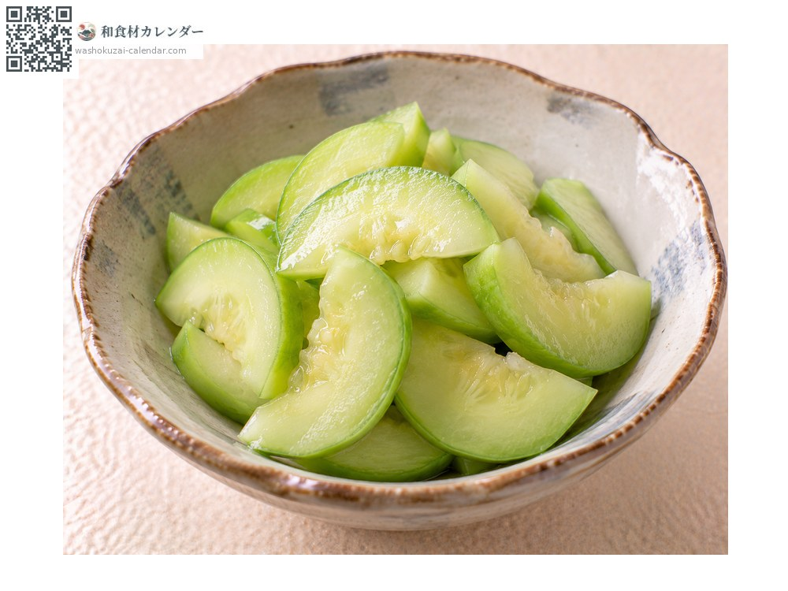
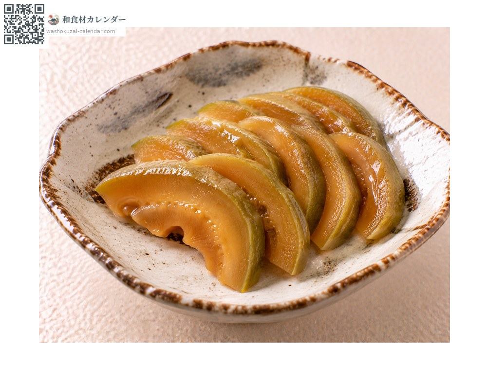
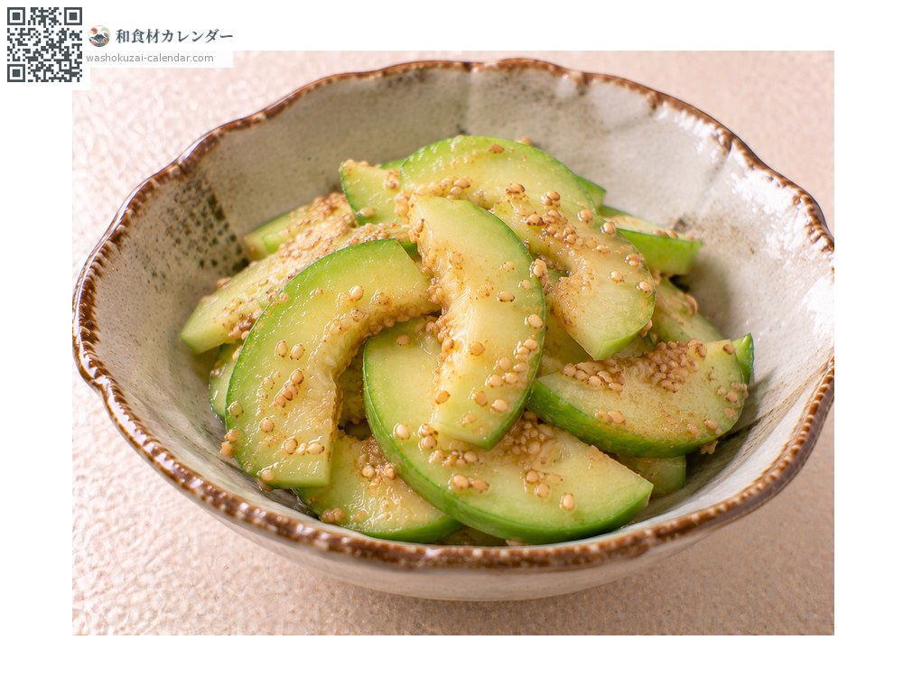

Vegetables
Baby melon
子メロン こめろん
Also known askomeron
At its best in Jun, Jul, Aug

When it is at its best
Jan
Feb
Mar
Apr
May
Jun
Jul
Aug
Sep
Oct
Nov
Dec
In seasonAvailable
How to cook

Asazuke
Sliced thin and salted, for a crisp bite.

Nara-zuke
Cured in sake lees, handled as a gourd would be, for long keeping.

In dressed dishes
Rubbed with salt and dressed; its blandness takes up seasoning well.
How to choose
Deep green, taut skin with no blemishes, and even in size.
Storage
Bag and refrigerate. Not suited to eating raw, so pickle it promptly.
Main areas
Good to know
The immature fruit thinned out so that the remaining melons grow large. Once discarded, it was taken up commercially when it proved good pickled, much as a gourd is. The flesh is firm with almost no sweetness, and it is used only for pickles.